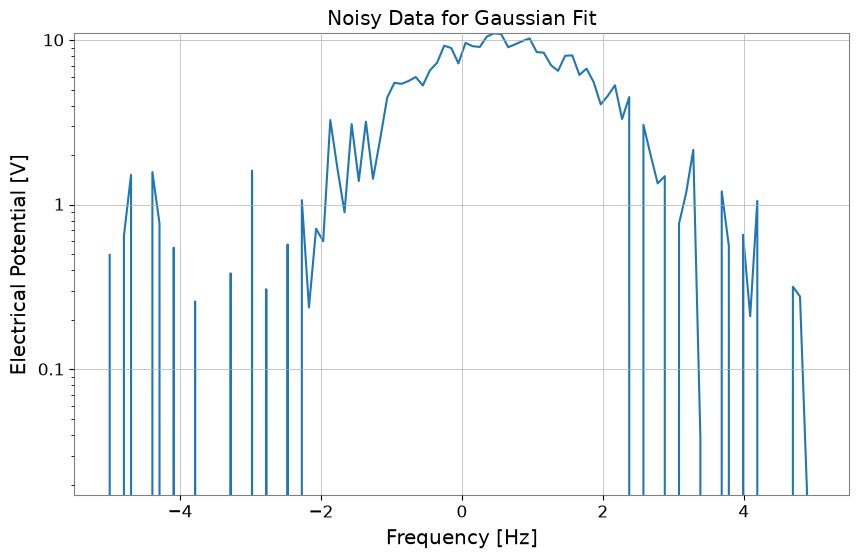
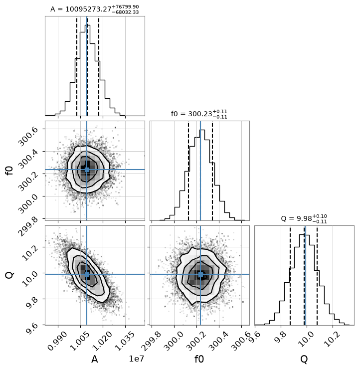
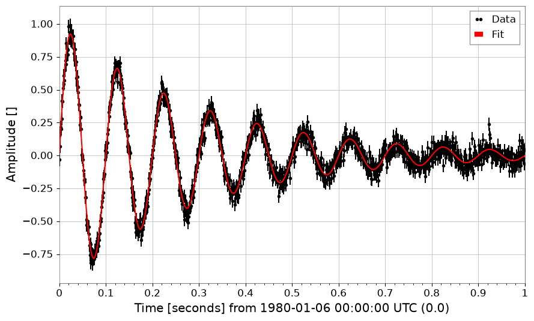
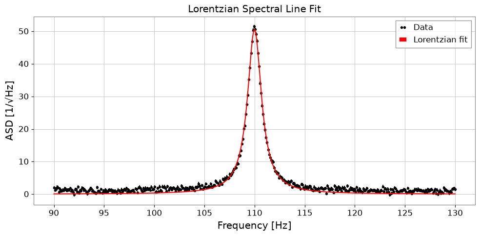
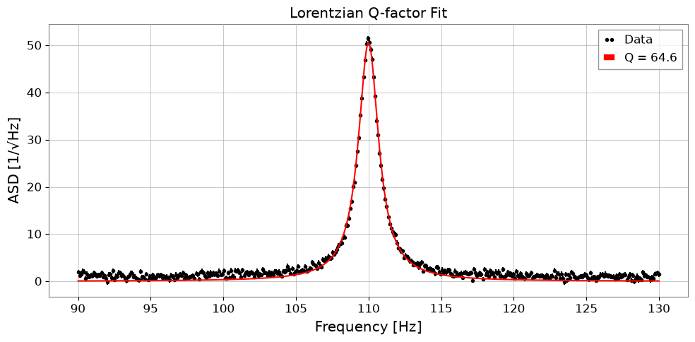

Note
This page was generated from a Jupyter Notebook. Download the notebook (.ipynb)
[1]:
# Skipped in CI: Colab/bootstrap dependency install cell.
Fitting: Spectral Line Analysis
This notebook demonstrates how to easily fit TimeSeries or FrequencySeries data using the gwexpy.fitting module. The backend uses iminuit, enabling least-squares fitting with error consideration.

[2]:
import warnings
warnings.filterwarnings("ignore", category=UserWarning)
warnings.filterwarnings("ignore", category=DeprecationWarning)
import matplotlib.pyplot as plt
import numpy as np
from gwexpy.frequencyseries import FrequencySeries
from gwexpy.plot import Plot
from gwexpy.timeseries import TimeSeries
plt.rcParams["figure.figsize"] = (10, 6)
1. Data Preparation
Here we create dummy data by adding noise to a Gaussian function.
[3]:
# Define model function (Gaussian)
def gaussian(x, a, mu, sigma):
return a * np.exp(-((x - mu) ** 2) / (2 * sigma**2))
# Generate dummy data on an explicit x-axis
np.random.seed(42)
x = np.linspace(-5, 5, 100)
true_params = {"a": 10, "mu": 0.5, "sigma": 1.2}
y_true = gaussian(x, **true_params)
y_noise = y_true + np.random.normal(0, 1.0, size=len(x))
# Use FrequencySeries so the fit axis matches the synthetic x values
ts = FrequencySeries(y_noise, frequencies=x, name="Noisy Gaussian", unit="V")
ts.plot(title="Noisy Data for Gaussian Fit");

2. Performing the Fit
Use the ts.fit() method to perform fitting. Specify the model function and initial parameter values p0 as arguments.
For narrow or localized peaks, constrain the center and width to physically meaningful ranges so the optimizer does not wander into a noise-only local minimum.
[4]:
# Fitting
# Keep the initial center near the visible peak and bound (mu, sigma) to plausible values
gaussian_limits = {"mu": (-2.0, 2.0), "sigma": (0.2, 3.0)}
result = ts.fit(
gaussian,
sigma=0.8,
p0={"a": 8.0, "mu": 0.0, "sigma": 1.0},
limits=gaussian_limits,
)
# Display results
display(result)
| Migrad | |
|---|---|
| FCN = 125.2 (χ²/ndof = 1.3) | Nfcn = 85 |
| EDM = 1e-07 (Goal: 0.0002) | |
| Valid Minimum | Below EDM threshold (goal x 10) |
| No parameters at limit | Below call limit |
| Hesse ok | Covariance accurate |
| Name | Value | Hesse Error | Minos Error- | Minos Error+ | Limit- | Limit+ | Fixed | |
|---|---|---|---|---|---|---|---|---|
| 0 | a | 10.05 | 0.21 | |||||
| 1 | mu | 0.550 | 0.029 | -2 | 2 | |||
| 2 | sigma | 1.171 | 0.028 | 0.2 | 3 |
| a | mu | sigma | |
|---|---|---|---|
| a | 0.0461 | -0 (-0.005) | -3.5e-3 (-0.569) |
| mu | -0 (-0.005) | 0.000845 | 0 (0.008) |
| sigma | -3.5e-3 (-0.569) | 0 (0.008) | 0.00081 |
3. Retrieving Results and Plotting
You can retrieve the best-fit parameters, errors, Chi2 values, etc. from the FitResult object. Additionally, the .plot() method makes it easy to visualize the results.
[5]:
print("Best Fit Parameters:", result.params)
print("Errors:", result.errors)
print("Chi2:", result.chi2)
print("NDOF:", result.ndof)
# Plot
fig, ax = plt.subplots(figsize=(10, 6))
result.plot(ax=ax, color="red", linewidth=2)
ax.set_title("Gaussian Fit Demo")
# When using auto-gps, let GWpy handle xlabel (includes epoch)
ax.set_ylabel("Amplitude")
plt.show()
Best Fit Parameters: {'a': 10.053068004204636, 'mu': 0.5500233455726176, 'sigma': 1.1710489113863423}
Errors: {'a': 0.21465081142898548, 'mu': 0.029072612232381, 'sigma': 0.02846288328581481}
Chi2: 125.15392534185452
NDOF: 97

4. Specifying Models by String
Instead of defining a model function, you can specify a predefined model name as a string. Currently supported models: 'gaus', 'exp', 'pol0', 'pol1', … 'pol9', 'landau', etc.
Below is an example using 'gaus'. Restrict the fit window to the actual visible peak so the predefined model is solving the same problem as the callable example above.
[6]:
# Fit using string 'gaus'
# Note: Parameter names for predefined models are fixed (for Gaussian: A, mu, sigma)
result_str = ts.fit(
"gaus",
p0={"A": 8.0, "mu": 0.0, "sigma": 1.0},
x_range=(-2.5, 3.5),
sigma=0.8,
limits={"mu": (-2.0, 2.0), "sigma": (0.2, 3.0)},
)
# Display results
display(result_str)
result_str.plot();
| Migrad | |
|---|---|
| FCN = 81.36 (χ²/ndof = 1.4) | Nfcn = 85 |
| EDM = 1.24e-08 (Goal: 0.0002) | |
| Valid Minimum | Below EDM threshold (goal x 10) |
| No parameters at limit | Below call limit |
| Hesse ok | Covariance accurate |
| Name | Value | Hesse Error | Minos Error- | Minos Error+ | Limit- | Limit+ | Fixed | |
|---|---|---|---|---|---|---|---|---|
| 0 | A | 10.04 | 0.22 | |||||
| 1 | mu | 0.548 | 0.029 | -2 | 2 | |||
| 2 | sigma | 1.175 | 0.029 | 0.2 | 3 |
| A | mu | sigma | |
|---|---|---|---|
| A | 0.0466 | 0 (0.002) | -3.7e-3 (-0.578) |
| mu | 0 (0.002) | 0.000854 | -0 (-0.003) |
| sigma | -3.7e-3 (-0.578) | -0 (-0.003) | 0.000858 |

5. Complex Number Fitting (Transfer Functions)
You can also fit complex data such as transfer functions. The cost function \(\chi^2 = \sum (Re_{diff})^2 + \sum (Im_{diff})^2\) is minimized, fitting real and imaginary parts simultaneously. The result plots automatically become Bode plots (magnitude and phase).
[7]:
# 1. Define complex model (simple pole)
def pole_model(f, A, f0, Q):
# H(f) = A / (1 + i * Q * (f/f0 - f0/f))
# Low-pass filter like but simplified. Let's use standard mechanical transfer function:
# H(f) = A / [ (f0^2 - f^2) + i * (f0 * f / Q) ]
omega = 2 * np.pi * f
omega0 = 2 * np.pi * f0
return A / ((omega0**2 - omega**2) + 1j * (omega0 * omega / Q))
# 2. Generate data
f = np.linspace(10, 1000, 1000)
p_true = {"A": 1e7, "f0": 300, "Q": 10}
data_clean = pole_model(f, **p_true)
# Add noise (real and imaginary parts independent)
np.random.seed(0)
noise_re = np.random.normal(0, 5, len(f))
noise_im = np.random.normal(0, 5, len(f))
data_noisy = data_clean + 0.2 * noise_re + 0.2j * noise_im
# Create FrequencySeries
fs = FrequencySeries(data_noisy, frequencies=f, name="Transfer Function")
plot = Plot(fs.abs(), fs.real, fs.imag, xscale="log", yscale="symlog", alpha=0.8)
plt.legend(["|H(f)|", "Re(H(f))", "Im(H(f))"])
plt.title("Noisy Transfer Function Data")
plt.tight_layout()
plt.show()

[8]:
# 3. Fitting
print("Fit Start...")
# Use shifted initial values
result_complex = fs.fit(pole_model, sigma=1.0, p0={"A": 0.8e7, "f0": 320, "Q": 8})
# Display results
display(result_complex)
# 4. Plot (Bode plot)
# Automatically becomes amplitude and phase plots
result_complex.bode_plot()
plt.gcf().get_axes()[0].set_ylim(1e-1, 1e2)
plt.tight_layout()
plt.show()
Fit Start...
| Migrad | |
|---|---|
| FCN = 1907 (χ²/ndof = 1.0) | Nfcn = 102 |
| EDM = 1.21e-09 (Goal: 0.0002) | |
| Valid Minimum | Below EDM threshold (goal x 10) |
| No parameters at limit | Below call limit |
| Hesse ok | Covariance accurate |
| Name | Value | Hesse Error | Minos Error- | Minos Error+ | Limit- | Limit+ | Fixed | |
|---|---|---|---|---|---|---|---|---|
| 0 | A | 10.09e6 | 0.07e6 | |||||
| 1 | f0 | 300.24 | 0.11 | |||||
| 2 | Q | 9.99 | 0.10 |
| A | f0 | Q | |
|---|---|---|---|
| A | 5.4e+09 | 795.222 (0.099) | -5.296459e3 (-0.707) |
| f0 | 795.222 (0.099) | 0.0118 | -0.000 (-0.035) |
| Q | -5.296459e3 (-0.707) | -0.000 (-0.035) | 0.0104 |

6. MCMC Analysis (emcee)
Using the maximum likelihood estimate obtained from iminuit as the initial value, you can perform MCMC (Markov Chain Monte Carlo) analysis using emcee.
Note: To use this feature,
emceeandcornermust be installed.
[9]:
# Run MCMC
# n_walkers: number of walkers, n_steps: number of steps, burn_in: number of initial steps to discard
try:
sampler = result_complex.run_mcmc(n_walkers=32, n_steps=1000, burn_in=200)
# Create corner plot (visualize posterior distribution)
# Display true values (or maximum likelihood estimates) with blue lines
result_complex.plot_corner()
except ImportError as e:
print(e)
except Exception as e:
print(f"MCMC Error: {e}")
100%|██████████| 1000/1000 [00:11<00:00, 89.59it/s]

Example Usage of New Common Models
These are usage examples of power_law and damped_oscillation added to gwexpy.fitting.models.
[10]:
from gwexpy.fitting.models import damped_oscillation, power_law
# Power law
x = np.logspace(0, 2, 100)
y = power_law(x, A=10, alpha=-1.5) * (1 + 0.1 * np.random.normal(size=len(x)))
fs = FrequencySeries(y, frequencies=x)
res_pl = fs.fit("power_law", p0={"A": 5, "alpha": -1}, sigma=y * 0.1)
print("Power law alpha:", res_pl.params["alpha"])
display(res_pl)
res_pl.plot()
plt.xscale("log")
plt.yscale("log")
plt.show()
plt.close()
# Damped oscillation
t = np.linspace(0, 1, 1000)
y_osc = damped_oscillation(t, A=1, tau=0.3, f=10) + 0.05 * np.random.normal(size=len(t))
ts_osc = TimeSeries(y_osc, times=t)
res_osc = ts_osc.fit(
"damped_oscillation", p0={"A": 0.5, "tau": 0.5, "f": 12}, sigma=0.05
)
print("Damped oscillation frequency:", res_osc.params["f"])
display(res_osc)
res_osc.plot();
Power law alpha: -1.507325448901415
| Migrad | |
|---|---|
| FCN = 102.8 (χ²/ndof = 1.0) | Nfcn = 90 |
| EDM = 6.45e-06 (Goal: 0.0002) | |
| Valid Minimum | Below EDM threshold (goal x 10) |
| No parameters at limit | Below call limit |
| Hesse ok | Covariance accurate |
| Name | Value | Hesse Error | Minos Error- | Minos Error+ | Limit- | Limit+ | Fixed | |
|---|---|---|---|---|---|---|---|---|
| 0 | A | 9.84 | 0.20 | |||||
| 1 | alpha | -1.507 | 0.008 |
| A | alpha | |
|---|---|---|
| A | 0.04 | -1.33e-3 (-0.869) |
| alpha | -1.33e-3 (-0.869) | 5.88e-05 |

Damped oscillation frequency: 9.993425925552833
| Migrad | |
|---|---|
| FCN = 917.9 (χ²/ndof = 0.9) | Nfcn = 192 |
| EDM = 6.02e-07 (Goal: 0.0002) | |
| Valid Minimum | Below EDM threshold (goal x 10) |
| No parameters at limit | Below call limit |
| Hesse ok | Covariance accurate |
| Name | Value | Hesse Error | Minos Error- | Minos Error+ | Limit- | Limit+ | Fixed | |
|---|---|---|---|---|---|---|---|---|
| 0 | A | 1.002 | 0.008 | |||||
| 1 | tau | 0.301 | 0.004 | |||||
| 2 | f | 9.993 | 0.006 | |||||
| 3 | phi | 0.010 | 0.008 |
| A | tau | f | phi | |
|---|---|---|---|---|
| A | 6.91e-05 | -0.021e-3 (-0.717) | 0 (0.072) | -0.01e-3 (-0.104) |
| tau | -0.021e-3 (-0.717) | 1.28e-05 | -0.001e-3 (-0.048) | 0.002e-3 (0.072) |
| f | 0 (0.072) | -0.001e-3 (-0.048) | 3.95e-05 | -0.04e-3 (-0.713) |
| phi | -0.01e-3 (-0.104) | 0.002e-3 (0.072) | -0.04e-3 (-0.713) | 6.74e-05 |

7. Spectral Line Fitting: Lorentzian and Voigt Profiles
Model |
When to use |
|---|---|
Gaussian |
Doppler- or pressure-broadened lines; truly symmetric noise peaks |
Lorentzian |
Resonances with a single loss mechanism (Q-limited linewidth) |
Voigt |
Composite broadening (Gaussian instrument resolution + Lorentzian damping) |
All three are available in gwexpy.fitting.models and can be referenced by string.
7a. Lorentzian (HWHM parameterisation)
A: peak amplitudex0: centre frequencygamma: half-width at half-maximum (HWHM)
[11]:
from gwexpy.fitting.models import lorentzian, voigt
# ── Synthetic ASD with a Lorentzian resonance peak ──────────────
np.random.seed(0)
freqs = np.linspace(90, 130, 400) # Hz, around a 110 Hz mode
TRUE_A, TRUE_X0, TRUE_GAMMA = 50.0, 110.0, 0.8
y_lorenz = lorentzian(freqs, TRUE_A, TRUE_X0, TRUE_GAMMA)
noise = np.random.normal(0, 0.5, len(freqs))
y_data = y_lorenz + noise + 1.0 # +1 flat background
fs_lorenz = FrequencySeries(y_data, frequencies=freqs,
name='ASD with Lorentzian peak', unit='1/rtHz')
# ── Fit ─────────────────────────────────────────────────────────
res_lorenz = fs_lorenz.fit(
'lorentzian',
p0={'A': 30.0, 'x0': 112.0, 'gamma': 1.5},
sigma=0.5,
)
print(f"True A={TRUE_A}, x0={TRUE_X0}, gamma={TRUE_GAMMA}")
print(f"Fit A={res_lorenz.params['A']:.2f} ± {res_lorenz.errors['A']:.2f}")
print(f" x0={res_lorenz.params['x0']:.3f} ± {res_lorenz.errors['x0']:.3f}")
print(f" gamma={res_lorenz.params['gamma']:.3f} ± {res_lorenz.errors['gamma']:.3f}")
fig, ax = plt.subplots(figsize=(10, 5))
res_lorenz.plot(ax=ax, label='Lorentzian fit')
ax.set_xlabel('Frequency [Hz]')
ax.set_ylabel('ASD [1/√Hz]')
ax.set_title('Lorentzian Spectral Line Fit')
ax.legend()
plt.tight_layout()
plt.show()
True A=50.0, x0=110.0, gamma=0.8
Fit A=50.50 ± 0.20
x0=110.000 ± 0.003
gamma=0.851 ± 0.005

7b. Lorentzian Q-factor parameterisation
For resonators it is often more natural to express the linewidth via the quality factor \(Q = x_0 / (2\gamma)\):
Use 'lorentzian_q' to fit directly in terms of (A, x0, Q).
[12]:
TRUE_Q = TRUE_X0 / (2 * TRUE_GAMMA) # ~68.75
res_q = fs_lorenz.fit(
'lorentzian_q',
p0={'A': 30.0, 'x0': 112.0, 'Q': 50.0},
sigma=0.5,
)
print(f"True Q = {TRUE_Q:.2f}")
print(f"Fit Q = {res_q.params['Q']:.2f} ± {res_q.errors['Q']:.2f}")
print(f" x0 = {res_q.params['x0']:.3f} ± {res_q.errors['x0']:.3f} Hz")
fig, ax = plt.subplots(figsize=(10, 5))
res_q.plot(ax=ax, label=f"Q = {res_q.params['Q']:.1f}")
ax.set_xlabel('Frequency [Hz]')
ax.set_ylabel('ASD [1/√Hz]')
ax.set_title('Lorentzian Q-factor Fit')
ax.legend()
plt.tight_layout()
plt.show()
True Q = 68.75
Fit Q = 64.63 ± 0.36
x0 = 110.000 ± 0.003 Hz

7c. Voigt Profile
The Voigt profile is the convolution of a Gaussian (width \(\sigma\)) and a Lorentzian (HWHM \(\gamma\)). It is computed via the Faddeeva function for efficiency.
Use it when the line shows both instrument-resolution broadening (Gaussian) and intrinsic damping (Lorentzian).
[13]:
# ── Synthetic data with mixed broadening ─────────────────────────
TRUE_SIGMA, TRUE_GAMMA_V = 0.5, 0.4
y_voigt = voigt(freqs, A=40.0, x0=110.0, sigma=TRUE_SIGMA, gamma=TRUE_GAMMA_V)
y_data_v = y_voigt + np.random.normal(0, 0.4, len(freqs)) + 0.5
fs_voigt = FrequencySeries(y_data_v, frequencies=freqs,
name='ASD with Voigt peak', unit='1/rtHz')
# Fit Lorentzian (wrong model) for comparison
res_l = fs_voigt.fit('lorentzian', p0={'A': 30.0, 'x0': 111.0, 'gamma': 0.8},
sigma=0.4)
# Fit Voigt (correct model)
res_v = fs_voigt.fit('voigt',
p0={'A': 30.0, 'x0': 111.0, 'sigma': 0.6, 'gamma': 0.5},
sigma=0.4)
print(f"Lorentzian chi2/ndof = {res_l.chi2:.1f}/{res_l.ndof}")
print(f"Voigt chi2/ndof = {res_v.chi2:.1f}/{res_v.ndof}")
print(f"Recovered sigma={res_v.params['sigma']:.3f} (true {TRUE_SIGMA}),"
f" gamma={res_v.params['gamma']:.3f} (true {TRUE_GAMMA_V})")
fig, axes = plt.subplots(1, 2, figsize=(14, 5))
res_l.plot(ax=axes[0], label='Lorentzian fit')
axes[0].set_title(f"Lorentzian χ²/ndof = {res_l.chi2:.0f}/{res_l.ndof}")
axes[0].set_xlabel('Frequency [Hz]')
axes[0].legend()
res_v.plot(ax=axes[1], label='Voigt fit')
axes[1].set_title(f"Voigt χ²/ndof = {res_v.chi2:.0f}/{res_v.ndof}")
axes[1].set_xlabel('Frequency [Hz]')
axes[1].legend()
plt.suptitle('Model Comparison: Lorentzian vs Voigt', fontsize=13)
plt.tight_layout()
plt.show()
Lorentzian chi2/ndof = 1278.6/397
Voigt chi2/ndof = 766.8/396
Recovered sigma=0.415 (true 0.5), gamma=0.522 (true 0.4)